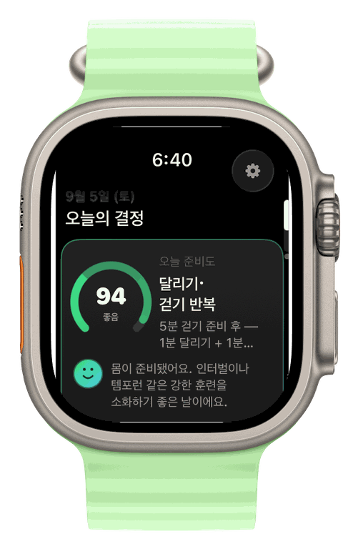
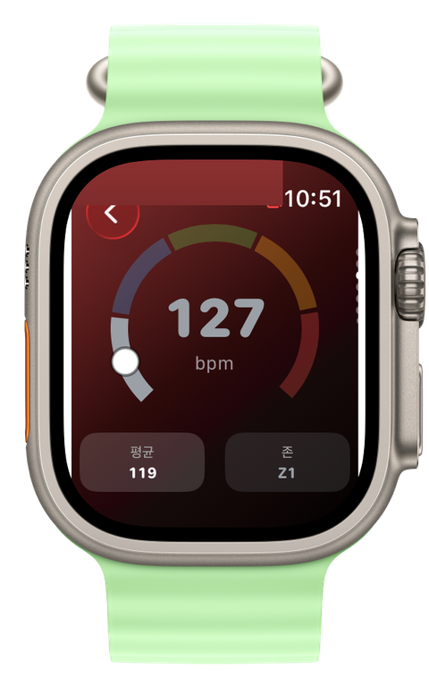
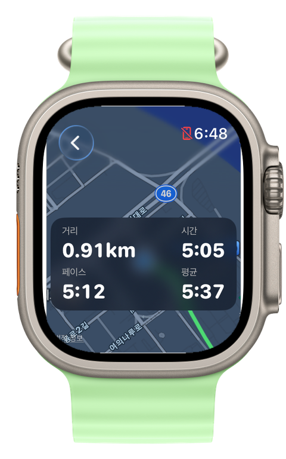
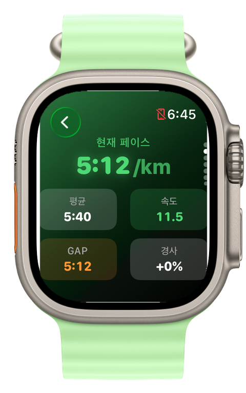
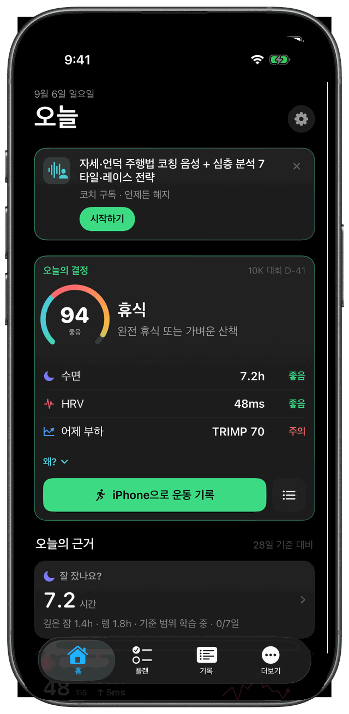
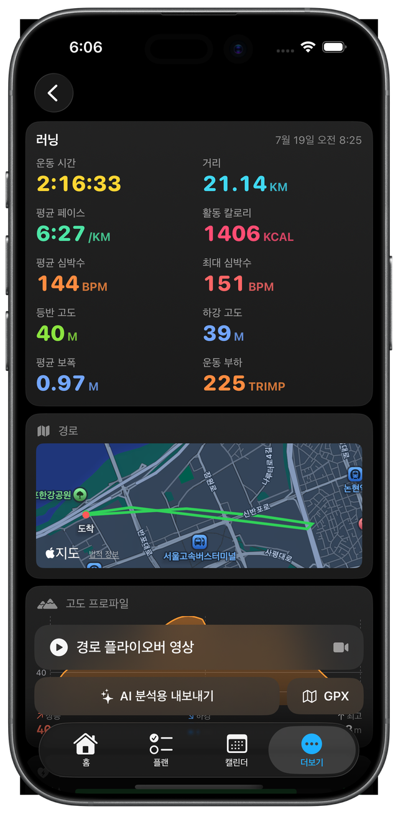
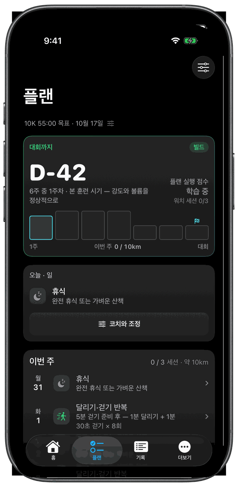
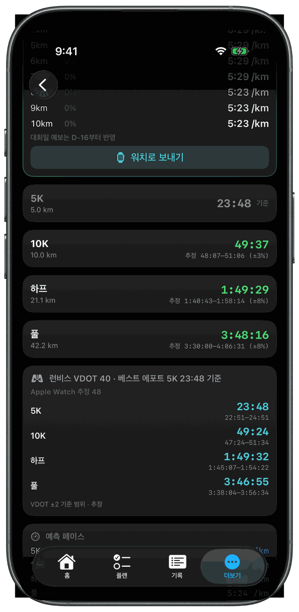

Apple Watch는 기록합니다. Runvis는 코치합니다.
준비운동부터 결승선까지, 옆에서 함께 뛰는 것처럼.
계정 없음 · 서버 없음 · 신발 신고 3초면 시작



그 뒤로는 코치가 알아서 이어갑니다 — 날씨 브리핑, 준비운동, 그리고 달리기 시작하면 자동으로 기록 시작. 손목을 다시 볼 필요가 없습니다.
실시간 기상으로 오늘의 주의점을 먼저. 추운 날엔 준비운동이 자동으로 길어집니다.
목→팔→허리→다리→발목→제자리뛰기, 6단계를 타이머와 음성으로. 건너뛰기도 한 번의 탭.
버튼 없이, 손목의 러닝 리듬을 감지해 자동으로 기록 시작. 준비운동 끝나고 그대로 출발하면 됩니다.
Apple Watch 기본 운동 앱은 숫자를 기록합니다.
Runvis는 그 숫자를 읽고 지금 필요한 코칭을 건넵니다 — 준비운동부터 대회날까지.
긴 러닝을 골라보세요. 런비스가 언제 말을 거는지 — 그리고 언제 조용히 있는지 — 그대로 보여드립니다.
"운동 시작"을 누르면 그날의 기온·습도를 음성으로 브리핑하고, 날씨에 맞춰 준비운동을 시켜줍니다. 추운 날엔 더 길게, 습한 날엔 수분 조언까지 — 밖에 나와 코치와 함께 몸을 풉니다.
준비운동이 끝나고 달리기 시작하면 자동으로 러닝을 인식해 코칭이 시작됩니다. 버튼을 다시 누를 필요 없이, 몸을 풀고 그대로 출발하면 됩니다.
대회 GPX를 올리면 어디서 오르막·내리막이 나올지 런비스가 먼저 압니다. 처음 뛰는 코스여도 오버페이스 없이, 출발선부터 결승선까지 목표 시간에 맞춰 완주하도록 안내합니다.
자세가 무너지는 순간, 언덕이 다가오는 순간, 회복이 필요한 순간 — 필요할 때만 정확히 안내합니다. 수다스럽지 않게.
운동 상세에서 한 번의 탭으로 AI 분석용 프롬프트를 내보내기. ChatGPT·Gemini·Claude 등 내가 쓰는 AI에 붙여넣으면 즉시 심층 분석을 받습니다.
훈련 준비도·부하·회복까지, 공개된 스포츠 과학 공식으로 계산한 숫자. 각 지표를 탭하면 초보자도 알기 쉽게 설명합니다.
Apple Watch에서 바로 보고, 아이폰에서 깊이 들여다봅니다. 아래는 실제 앱 화면입니다.


수면·HRV·안정시 심박으로 계산한 오늘의 훈련 준비도. 훈련 부하(CTL·ATL·TSB)·ACWR·회복 시간까지, 모든 숫자는 공개된 스포츠 과학 공식에서 나옵니다.
심박 존 분포·운동 부하(TRIMP)·구간별 페이스에 더해, 런비스가 폼과 페이스 배분을 직접 코칭합니다. "고른 페이스", "Fly-and-Die 주의" 같은 진단을 초보자도 알기 쉽게.

[AI 분석용 내보내기]를 누르면 아래 형식의 리포트가 생성됩니다. ChatGPT·Gemini·Claude 어디든 붙여넣으면 즉시 심층 분석 — 실제 앱이 만드는 형식 그대로입니다.
# 러닝 기록 리포트 - 종목: 러닝 · 일시: 2026-07-06 (월) 06:04 - 시간: 42:18 · 거리: 7.4 km · 평균 페이스: 5:43 /km ## 심박 & 부하 - 평균 심박: 142 bpm · 최대: 172 bpm - 심박 드리프트(전·후반 효율 변화): +2.1% - TRIMP(운동 부하): 72 ## 심박 존 분포 (Karvonen) | 존 | 시간 | 비율 | | Z2 | 28:06 | 66% | | Z3 | 10:24 | 25% | ## 러닝 다이내믹스 (평균) - 케이던스: 174 spm · 보폭: 1.01 m - 수직진폭: 8.1 cm · 지면접촉: 244 ms ## 심박 시계열 (분 단위) 0,118 1,131 2,138 3,141 … --- 위는 러닝 워치로 기록한 실측 데이터입니다. 다음 관점으로 분석해 주세요: 1) 페이스 배분과 심박 반응의 관계 2) 유산소 능력 상태 3) 러닝 폼 개선점 4) 다음 2주 훈련 제안
페이스 배분 — 심박 드리프트 +2.1%는 훌륭합니다. 42분 내내 같은 효율을 유지했다는 뜻이라, 이 페이스(5:43)는 몸에 잘 맞는 이지런입니다.
유산소 상태 — Z2에 66%를 머문 훌륭한 베이스 훈련이었어요. 이런 러닝을 주 2~3회 쌓으면 같은 심박에서 페이스가 점점 빨라집니다.
폼 — 케이던스 174는 부상 위험이 낮은 구간이고, 접지 244ms·수직진폭 8.1cm 모두 안정적입니다. 지금 폼을 유지하세요.
다음 2주 — 주 3회: 이지런 2회(오늘 페이스) + 언덕 스트라이드 1회. 3주 차에 템포런을 추가해볼 만한 상태입니다.
답변은 사용 중인 AI가 생성 — 데이터가 정형화돼 있어 어떤 AI든 깊게 읽습니다

트래커가 아니라 코치입니다. 목표 대회와 기록만 정하면, 최근 러닝 기록에 맞춰 이번 주·다음 주 훈련을 기기 안에서 만들어냅니다. 인터벌·템포·롱런까지, 왜 이 훈련인지 이유와 함께.
최근 베스트 기록 하나면 5K·10K·하프·풀코스의 목표 타임과 페이스를 예측합니다. VO2max(VDOT)와 검증된 러닝 공식 기반이라, 무리한 목표인지 현실적인지 바로 감이 옵니다.

"자세 좋아요" 같은 빈말이 아닙니다. 모든 코칭엔 워치 센서가 잡은 근거가 먼저 있습니다. 아이콘을 누르면 실제 안내가 한국어로 재생됩니다.
음악 볼륨은 부드럽게 낮아지고, 안내가 끝나면 다시 원래대로 돌아옵니다.
같은 순간에도 초급자에겐 풀어서, 고급자에겐 짧게 — 최근 1개월 기록으로 코칭 레벨이 자동 조정됩니다.
단, 워밍업 날씨 안내를 위해 Open-Meteo로 대략적인 위치 정보가 전송될 수 있습니다.
무료 버전만으로도 충분한 러닝 기록·분석. 코칭이 필요할 땐 커피 한 잔 값으로 한 달 동안 나만을 위한 러닝 코치가 함께합니다. 1개월 무료 체험으로 충분히 써보고 판단하세요.
대형 브랜드와 경쟁할 무기는 진정성입니다. 개발 과정을 그대로 공유합니다.
긴 러닝일수록 코치는 조용해야 합니다. 실제로 뛰어보고 개입 간격을 다시 설계한 기록.
백그라운드에서 타이머가 눌리는 문제를 찾아 실제 경과 시간 기준으로 재구성한 이야기.
추운 날 근육이 굳는다는 걸 알기에, 기온이 낮으면 준비운동을 더 길게. 밖에 나온 러너를 진짜 코치처럼 챙기고 싶었습니다.
TestFlight 베타가 열리면 가장 먼저 초대장을 보내드립니다.